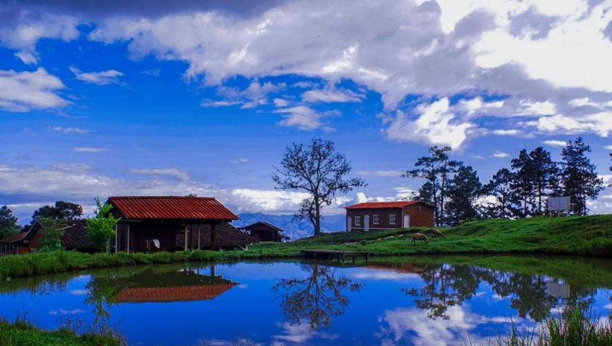
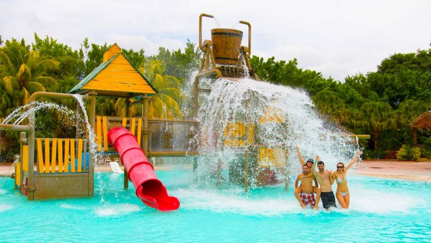
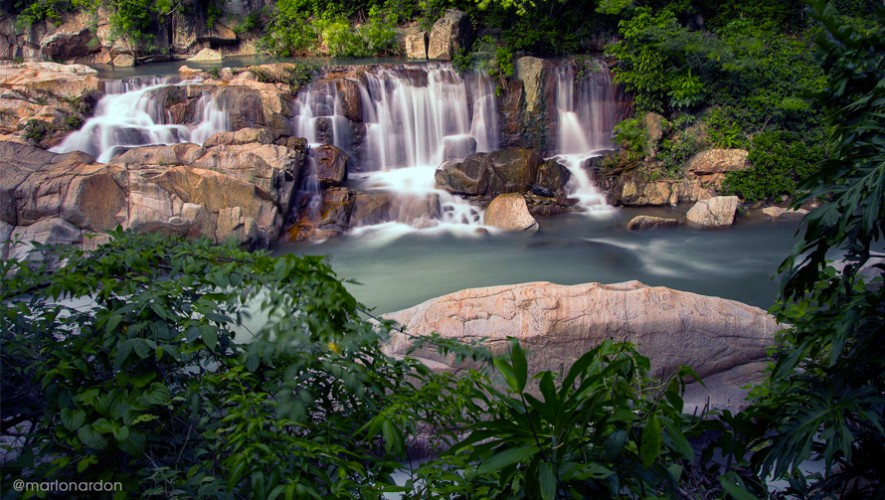
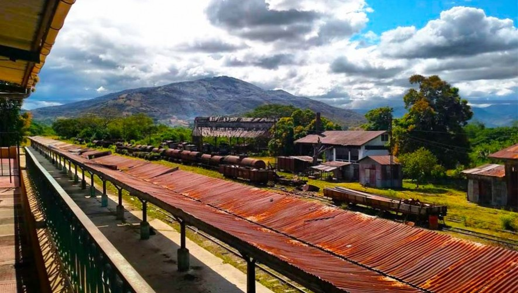
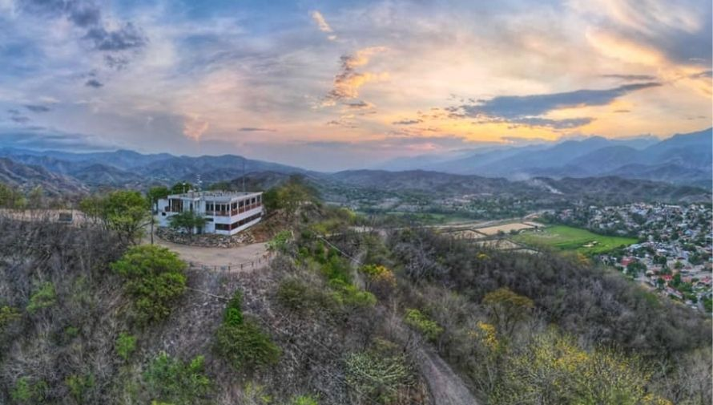

conocido por su clima cálido y su producción de ron, queso y tabaco. Es un área con terreno principalmente plano, ideal para la agricultura de melón, tabaco y tomates.
Por costumbre heredada de los migrantes venidos de España, los habitantes del oriente de Guatemala destacan por el gusto y afición a los juegos de azar.
También se realizan competencias de habilidad física como las carreras de listones o de argollas, las corridas de toros y jaripeos.
se encuentra a 148 km al este de la Ciudad de Guatemala, a orillas del Río Grande de Zacapa, y a una altitud de 120 metros sobre el nivel del mar
1 / 5

Montaña El Olvido Zacapa
Alberga diversos ecosistemas exóticos, especies de flora y fauna, que por cierto, incluye a nuestra ave símbolo nacional, el quetzal. Sal de la rutina y disfruta de un día entretenido.
2 / 5

Valle Dorado
Es un parque acuático para compartir, ya que existen atracciones para niños y para adultos. Si eres amante de las piscinas y te encanta sumergirte en el agua, este es el lugar ideal cuando visites el caluroso clima de Zacapa.
3 / 5

Río el Lobo
El conocido Río el Lobo es un sitio que vale la pena visitar, ya que el agua es muy limpia y se observa un paisaje rocoso muy interesante. Lo mejor es que el agua nace en las faldas de la Sierra de las Minas.
4 / 5

Museo del Ferrocaril
Interesante por la historia que contiene, podrás observar cómo eran los trenes de la época. También en las oficinas principales puedes tomarte una fotografía como administrador u operador de comunicaciones.
5 / 5

Mirador Gualán
Disfruta de la naturaleza en un espacio ubicado entre el bosque lo que le permite tener vistas privilegiadas. Algunos de sus atractivos son sus miradores, senderos, parques ecológicos, restaurante y hotel.
❮
❯